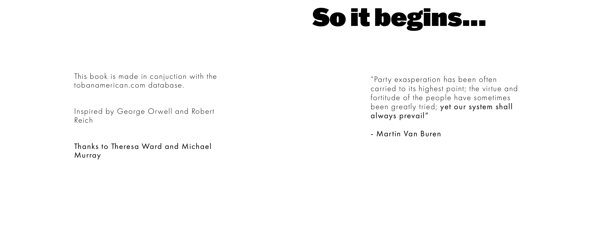
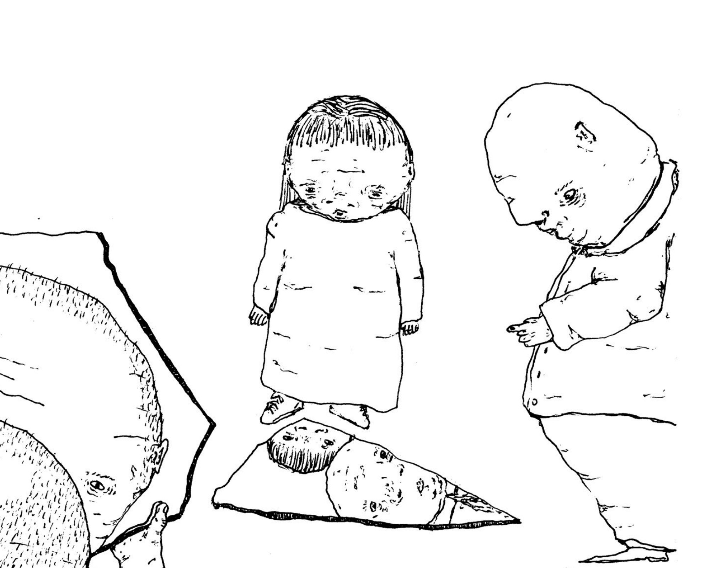
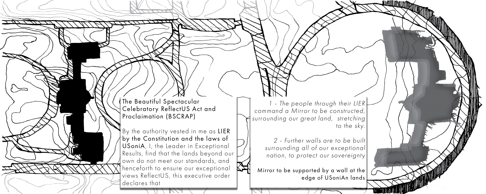
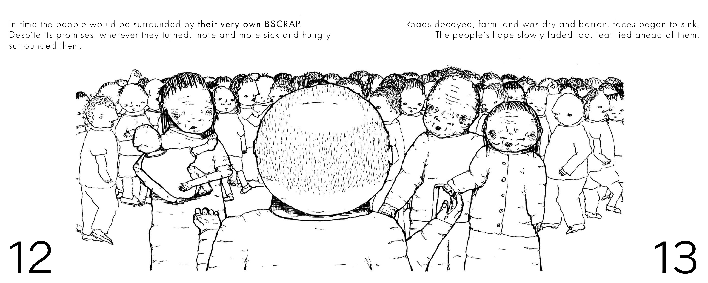
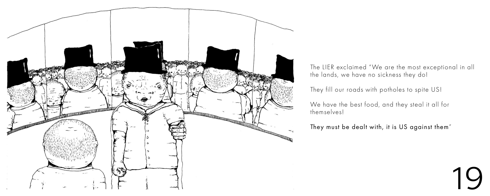
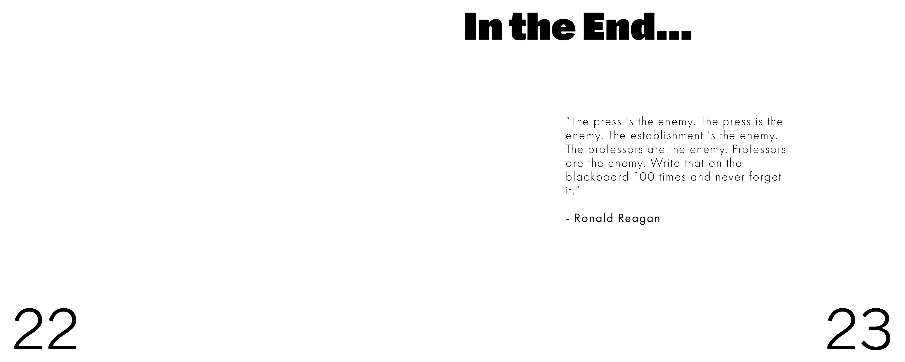
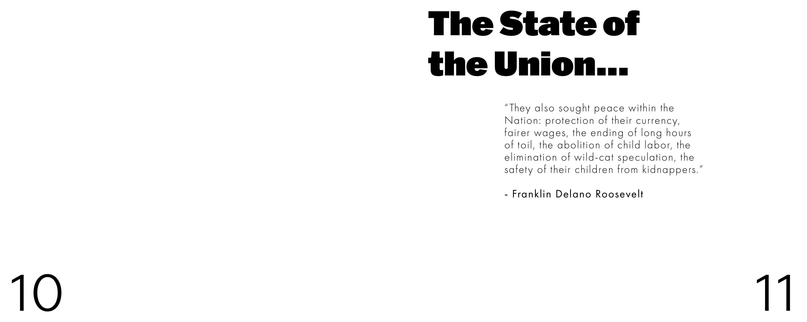
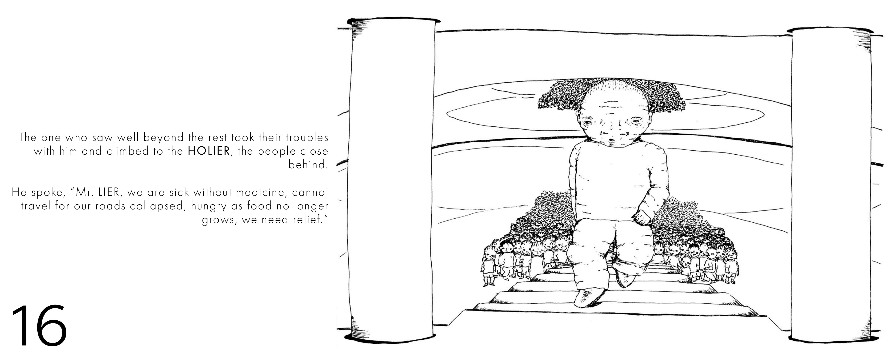
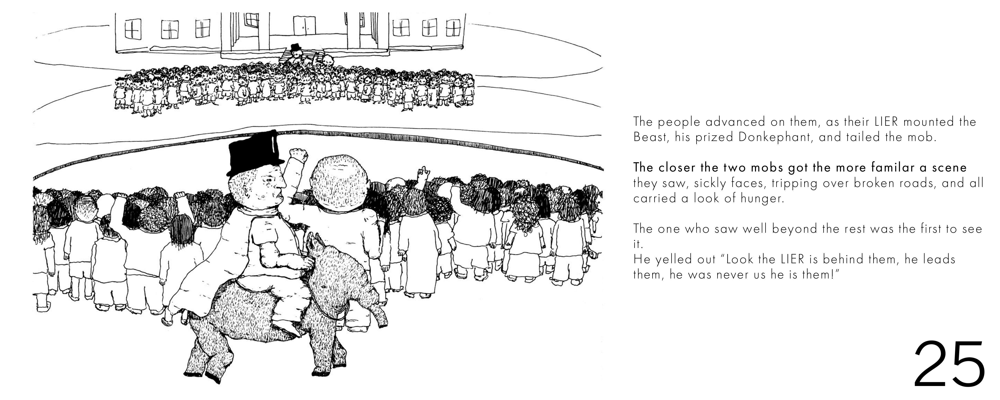
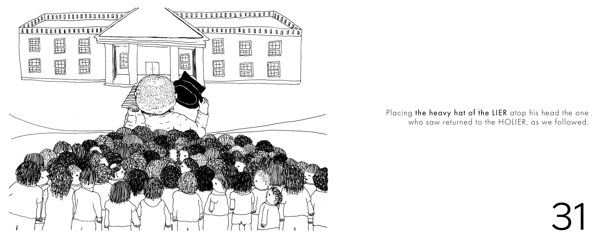

Reich names four stories American politicians tell on a loop.


I set the whole book in one town, Usonia, governed by LIER, and drew it three ways — Castle, Town, Mirror.

Mapping one place, read three ways.


The Rockwell method.

A tone borrowed from the fable.
Select Spreads
Turning the pages — each story opening, building, and turning on itself in sequence.



